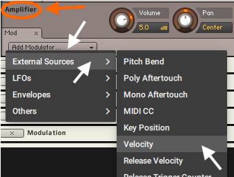
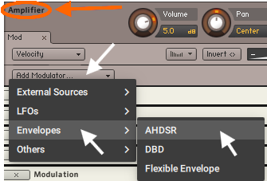

Zerando Samples e outros...
Este procedimento serve para retirar , moduladores e outros que possam necessitar de uma configuração especifica feita no Instrumento Kontakt (Biblioteca) que importamos o sample. Só deve ser realizado se vc estiver com algum problema que não consegue solucionar

Clique no disquete em seguida em "New instrument" conforme ilustra a figura acima.ira carregar um novo Instrumento conforme aponta a seta maior. No novo Instrumento clique na  em seguida clique em Group Editor que esta ao lado direito de "Instrument options" e em "Mod" a esquerda do volume , em baixo de "Amplifier" .
em seguida clique em Group Editor que esta ao lado direito de "Instrument options" e em "Mod" a esquerda do volume , em baixo de "Amplifier" .
Se tudo correr bem vc vai ver um instrumento com um Group1 vazio, certifique-se de estar em Group Editor (destacado em vermelho) conforme ilustra a figura abaixo, pois quando não estamos familiarizado com a tela e comum errar o local. Observe dentro do destaque com retângulo vermelho abaixo, temos um Modulador Envelope(ADSR) e um Velocity ambos já pre estabelecidos, pois ainda não temos um sample carregado.

Faça o procedimento de importar o sample descrito no link abaixo, só que ao invés de importar o sample com problema para o Toca sample, importe para esse instrumento vazio
Importando Samples.Apos importar o sample com problema vc pode encontrar similaridade com o que mostrarei como exemplo na imagem abaixo, para vc ter uma base de como proceder com o seu sample.
Certifique-se de estar no "Group Editor" indicado pela seta amarela. de um clique com o mouse no instrumento importado indicado pela seta vermelha, pois o outro e um Group vazio (sem sample) que deve ser excluído. Observe no retângulo azul, que tínhamos apenas um Modulador Envelope(ADSR) e um Velocity e que agora que inserimos o sample ele traz consigo alguns moduladores a mais, além dos filtros e efeitos inserido em outros Instrumentos Kontakt (livrarias) do qual exportamos o sample. Falaremos mais sobre os filtros e efeitos que estão dentro do retângulo vermelho mais adiante. Sendo redundante para explicar melhor, dentro do retângulo azul, temos bem mais moduladores do que antes de importar o sample, porem estes podem estar endereçados com instrumento de onde exportamos o sample e não teremos endereçamento para estes moduladores.

Observe na seta verde figura acima e vermelha figura abaixo "Voices " com valor de 1, isso diz a respeito da polifonia e quando encontrar assim mude para 128 digitando em cima, porem esta correção tem que ser feita no Toca Sample e salvar o mesmo.
Apos ajustar para 128 e excluir o grupo vazio, clicando nos dois "Mod" indicados pela seta branca da figura acima, teremos a tela abaixo. Observe que dentro de Source (retângulo azul) e Amplifier(retângulo laranja) ainda temos bem mais do que um Modulador Envelope(ADSR) e um Velocity. Dentro do retângulo vermelho temos filtros FX, estes pertencem somente a este sample selecionado(não fazem efeito pra mais nenhum outro) os que estão com um "B" vermelho de Bypass, é aconselhável desmarcar o Bypass, com um click no "B"(seta azul) e usar o recurso, ou excluir o mesmo clicando no "x" onde apontam as setas vermelha.

Observe as setas brancas acima, clicando no comando que elas apontam, o Kontakt descerá e mostrará a tela abaixo, um bloco de controle referente ao comando escolhido com o click, cada modulador da figura anterior tem um bloco deste que o controla, quando excluímos em cima automaticamente excluído aqui tbm

Rolando a tela de volta para os moduladores acima no Kontakt e clicando com da direita do mouse no espaço vazio, indicado pelas seta brancas abaixo, aparece a opção para "Delete" e podemos agora deletar todos os moduladores.

Apos deletar todos os moduladores escolhido e os filtros e efeitos que ficaram teremos uma tela como esta abaixo. Agora não temos moduladores conforme contornado em azul e laranja e em verde os filtros/efeito que ficaram

Mas precisamos de um Modulador Envelope(ADSR) e um Velocity, então vamos instalar: Em "Amplifier"(cuidado para não errar o local em laranja figura acima) clique em Add Modulator/External Sources/Velocity conforme ilustrado na figura abaixo.
Agora vamos clicar em "Amplifier"(atenção) clique em Add Modulator/Envelopes/AHDSR conforme ilustrado na figura abaixo.
Correndo tudo bem termos o resultado abaixo, com um Modulador Envelope(ADSR) e um Velocity. Agora é só salvar, exportar e importar para o Toca Sample e no painel dele regular o sample e salvar ao final.

Uma ultima dica que deixei para o final para não confundir: Em "Group Insert FX", clique em "Edit" e em um filtro ou efeito, conforme indicam as setas vermelha da figura abaixo, (as vezes este trava e tem que repetir de forma inversa, primeiro filtro depois edit) fazendo isso vc abre o controle do filtros selecionado, lembrando que tudo que vc fizer em "Group Insert FX" sera aplicado somente para o sample que esta selecionado, é independente do painel que vc tem acesso no Toca Sample, digamos que o sample selecionado tem muito agudo, vc pode tirar aqui através do "EQ" exemplificado abaixo , sera aplicado só neste sample e depois no painel do Toca Sample fazer o ajuste fino, Porem não exagere nestes pois tudo soma no consumo de recursos do seu equipamento